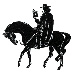
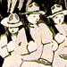
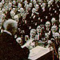
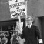

|
History of the Church .jpg) On April 23, 1968, The United Methodist Church was created when Bishop Reuben H. Mueller, representing The Evangelical United Brethren Church, and Bishop Lloyd C. Wicke of The Methodist Church joined hands at the constituting General Conference in Dallas, Texas. With the words, "Lord of the Church, we are united in Thee, in Thy Church and now in The United Methodist Church," the new denomination was given birth by two churches that had distinguished histories and influential ministries in various parts of the world. On April 23, 1968, The United Methodist Church was created when Bishop Reuben H. Mueller, representing The Evangelical United Brethren Church, and Bishop Lloyd C. Wicke of The Methodist Church joined hands at the constituting General Conference in Dallas, Texas. With the words, "Lord of the Church, we are united in Thee, in Thy Church and now in The United Methodist Church," the new denomination was given birth by two churches that had distinguished histories and influential ministries in various parts of the world.
Theological traditions steeped in the Protestant Reformation and Wesleyanism, similar ecclesiastical structures, and relationships that dated back almost two hundred years facilitated the union. In the Evangelical United Brethren heritage, for example, Philip William Otterbein, the principal founder of the United Brethren in Christ, assisted in the ordination of Francis Asbury to the superintendency of American Methodist work. Jacob Albright, through whose religious experience and leadership the Evangelical Association was begun, was nurtured in a Methodist class meeting following his conversion. Read more about the history of The United Methodist Church by year: 1736-1816 | 1817-1843 | 1844-1865 | 1866-1913 | 1914-1939 | 1940-1967 | 1968-Present
 Roots (1736-1816) | Español Roots (1736-1816) | Español
The United Methodist Church shares a common history and heritage with other Methodist and Wesleyan bodies. The lives and ministries of John Wesley (1703–1791) and of his brother, Charles (1707–1788), mark the origin of their common roots.
The Churches Grow (1817-1843) | Español
The Second Great Awakening was the dominant religious development among Protestants in America in the first half of the nineteenth century. Through revivals and camp meetings sinners were brought to an experience of conversion. Circuit riding preachers and lay pastors knit them into a connection.
The Slavery Question and Civil War (1844-1865) | Español
John Wesley was an ardent opponent of slavery. Many of the leaders of early American Methodism shared his hatred for this form of human bondage. As the nineteenth century progressed, it became apparent that tensions were deepening in Methodism over the slavery question.
 Reconstruction, Prosperity, and New Issues (1866-1913) | Español Reconstruction, Prosperity, and New Issues (1866-1913) | Español
The Civil War dealt an especially harsh blow to The Methodist Episcopal Church, South. Its membership fell to two-thirds its pre-war strength. Many of its churches lay in ruins or were seriously damaged.
World War and More Change, 1914–1939 | Español
In the years immediately prior to World War I, there was much sympathy in the churches for negotiation and arbitration as visible alternatives to international armed conflict. Many church members and clergy openly professed pacifism.
Movement Toward Union (1940-1967) | Español
Although Methodists, Evangelicals, and United Brethren each had published strong statements condemning war and advocating peaceful reconciliation among the nations, the strength of their positions was largely lost with American involvement in the hostilities of World War II.
Developments and Changes Since 1968 | Español
When The United Methodist Church was created in 1968, it had approximately 11 million members, making it one of the largest Protestant churches in the world. From The Book of Discipline of The United Methodist Church - 2004. Copyright 2004 by The United Methodist Publishing House. Used by permission.
|
 UMC.org
is the official online ministry of The United Methodist Church.
UMC.org
is the official online ministry of The United Methodist Church.